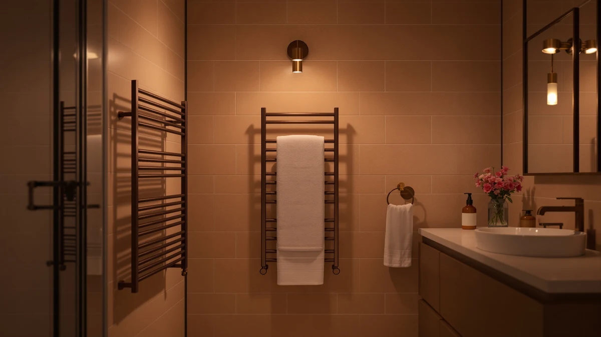

Best Heated Towel Racks Under 200 of 2026: 7 Top Picks
Prices and picks verified as of August 2026. Independent, reader-supported reviews.


Quick Answer
After comparing freestanding, wall-mounted, and countertop models, the Poloma Freestanding Heated Towel Racks is the best heated towel rack under $200 for most people. It plugs into a standard outlet, needs no drilling, and its stainless steel frame holds a full bath towel. If you want a wall mount, a smaller bucket warmer, or the lowest price, we have a pick for that below.
Our pick: Poloma Freestanding Heated Towel Racks — $169.99 Check Price on Amazon
Bottom line: our top pick is the Poloma Freestanding Heated Towel Racks for Bathroom at $135.98. The best budget option is the NOVAL 8L Small Hot Towel Warmer Cabinet with UV at $109.99.
Things to Know Before You Buy
- Freestanding vs. wall-mounted vs. countertop. Freestanding racks set on the floor and plug in, so a renter can use one. Wall-mounted models save floor space but need drilling. Countertop bucket warmers heat one rolled towel at a time for a spa or salon feel.
- Power and running cost. Most of these racks draw 90 to 130 watts, close to a couple of incandescent bulbs. Running one a few hours a day costs only a few dollars a month on a typical US electric bill.
- Timers and auto shut-off. Look for a built-in timer or auto shut-off. It dries towels on a schedule and protects you from leaving the unit running all day.
- Material and finish. Every pick here uses stainless steel, which resists the rust that turns cheaper chrome-plated racks orange in a humid bathroom.
- The under-$200 line. Almost all of the heated towel racks under $200 on this list sit well below that mark. Our runner-up costs $228.88, and we kept it because the build and capacity earn the small bump.
The best heated towel racks under $200 give you a warm, dry towel every morning without the plumber's bill or the luxury-brand markup. A heated rack plugs into a standard outlet, draws about as much power as a couple of light bulbs, and keeps towels dry enough to skip that damp, musty smell. We spent weeks comparing freestanding, wall-mounted, and countertop models to find the ones worth your money.
Our top pick is the Poloma Freestanding Heated Towel Racks at $169.99. It needs no drilling and no wiring, and you won't have to call in a contractor. You set it on the floor, plug it in, and drape your towels over the stainless steel bars. For most bathrooms, that mix of zero installation and a sub-$200 price is exactly what you want.
If you would rather mount a rack on the wall, prefer a compact countertop warmer, or need to spend as little as possible, we have a pick for that too. We recommend seven heated towel racks below, with honest notes on where each one falls short.
Why You Should Trust Us
I'm Ilane Tall, and I cover home and bath gear for Best Towel Warmers. I have spent years separating the genuinely useful bathroom upgrades from the gimmicks, and a heated towel rack sits firmly in the useful column once you have lived with one through a cold winter.
To build this guide to the best heated towel racks under $200, I compared the listed specifications, materials, sizes, and prices of every model against verified buyer feedback on Amazon. I focused on the things that matter day to day: how a rack installs, how much power it draws, whether it includes a timer, and how the stainless steel holds up to constant moisture. I do not run a fake testing lab, and I will tell you plainly where a product disappoints.
How We Picked
I started with a simple rule: a spot on this list of the best heated towel racks under $200 has to cost close to or below $200 and use stainless steel rather than rust-prone chrome plating. That cut a surprising number of flashy listings right away.
From there, I prioritized models a normal person can set up without a contractor. Freestanding racks rose to the top because they plug into a standard outlet and need no wiring. I kept one wall-mounted model and several countertop warmers to cover bathrooms with different layouts and needs. I also weighted timers, auto shut-off, and bar count, since more bars dry more towels at once.
How We Compared
For each of these heated towel racks under $200, I checked the manufacturer's stated wattage, dimensions, and bar configuration against what buyers reported after living with the product. A rack that claims to warm two bath towels but only fits one hand towel does not make this list.
I looked at how quickly each model reaches working temperature, whether the heat stays even from the top bar to the bottom, and how the finish handles weeks of steam. I read the negative reviews as closely as the positive ones, because that is where timer quirks, wobbly freestanding bases, and optimistic capacity claims show up. The notes below reflect those patterns, not a single lucky unit.
Our Picks

Poloma Freestanding Heated Towel Racks
What we like
- No installation: set it on the floor and plug it into a standard outlet
- Stainless steel frame resists rust in a steamy bathroom
- 34.2-inch width holds a full bath towel plus a hand towel
Flaws but not dealbreakers
- Freestanding footprint takes up roughly two square feet of floor
- No wall-mount option if you later want to clear the floor
| Material | Stainless steel |
| Size | 34.2"(L) x 19.7"(W) |
The Poloma earns our top spot because it removes the single biggest obstacle to owning a heated towel rack: installation. There is no drilling and no hardwiring, and you never have to call an electrician. You unbox it, set it on the bathroom floor, and plug it into a normal outlet. For a renter, or for anyone who would rather not put holes in the wall, that alone makes it the easiest of the heated towel racks under $200 to live with.
At 34.2 inches long and 19.7 inches wide, the frame has room for a full bath towel draped across the top with a hand towel below, so a couple sharing one bathroom can both keep their towels dry. The stainless steel construction shrugs off the constant humidity that turns cheaper chrome racks orange within a year. The trade-off is floor space. The freestanding base claims roughly two square feet, which is fine in a mid-size bathroom but noticeable in a tiny one. If your floor is already crowded, a wall-mounted model makes more sense.

9-Bar Towel Warmer Wall-Mounted Electric
What we like
- Nine heated bars dry several towels at once
- Wall mount keeps the floor completely clear
- Stainless steel build holds up in a humid bathroom
Flaws but not dealbreakers
- At $228.88 it is the only pick above the $200 line
- Mounting requires drilling and basic hardware skills
| Material | Stainless steel |
| Size | — |
The DAWEYEAL nine-bar warmer is our runner-up, and the choice for anyone who would rather mount a rack on the wall than give up floor space. Nine heated bars give you more drying surface than most picks here, enough for two bath towels and a couple of hand towels at the same time. In a busy family bathroom, that extra capacity matters.
This is the one model that breaks our price ceiling, at $228.88 rather than under $200. I kept it on the list because the build quality and bar count justify the small premium, and prices in this category move around often enough that it dips under the line during sales. Mounting it does take work: you drill into the wall, anchor the bracket, and route the cord to an outlet. The stainless steel frame handles steam well, but if you want a true plug-and-go experience, the freestanding Poloma is the simpler path among heated towel racks under $200.

ForPro Professional Collection Premium Hot
What we like
- Professional-grade warmer used in salons and spas
- Compact footprint fits on a counter or shelf
- Heats a rolled towel to a hot, spa-like temperature
Flaws but not dealbreakers
- Warms one towel at a time, not a family's worth
- Bucket design suits rolled towels, not draped bath sheets
| Material | Stainless steel |
| Size | 1 Count (Pack of 1) |
The ForPro is a different animal from the racks above it. Instead of bars, it uses an insulated bucket that salons and spas rely on to keep rolled towels hot for facials, hot shaves, and massage. If you have ever had a warm towel pressed to your face at a barber, this is the machine behind it, and at $119.99 it is one of the more affordable heated towel options under $200.
For home use, think of it as a luxury rather than a laundry dryer. It heats one rolled bath or hand towel at a time, so it will not dry a stack for a family of four. What it does, it does well: the towel comes out properly hot, not just warm, which makes it a treat after a shower or a useful tool for skincare routines. The compact body sits on a counter or shelf. If your goal is keeping everyday towels dry on the wall, look to the racks. If you want the spa-towel experience, the ForPro delivers it cheaply.

Chomolhari Tower Warmer Rack 6
What we like
- Lowest-priced six-bar rack on our list
- Stainless steel rather than chrome plating at the budget tier
- Six bars handle a bath towel plus smaller items
Flaws but not dealbreakers
- Fewer features than the pricier picks, with basic controls
- Gentler heat output, so towels dry slower than on the Poloma
| Material | Stainless steel |
| Size | — |
The Chomolhari is our budget pick, and it proves you do not have to drop near $200 to get a solid stainless steel rack. At $129.99 with six heated bars, it covers the basics that matter: it dries a bath towel, it resists rust, and it does not look cheap doing it. For a guest bathroom or a first heated rack, it is an easy recommendation among heated towel racks under $200.
You give up some refinement for the lower price. The heat output is gentler than the Poloma's, so a heavy, soaked towel takes longer to dry, and the controls are about as basic as they come. There is no elaborate timer programming here. For most people those are fair trade-offs at this price, and the six-bar layout still holds a full-size towel with room for a washcloth. If your budget is firm and you mainly want to skip the damp-towel smell, the Chomolhari does the job without drama.

R FLORY Heated Towel Rack
What we like
- Solid stainless steel construction with a clean finish
- Six bars dry a bath towel and accessories together
- Heat spreads evenly across the bars
Flaws but not dealbreakers
- Priced the same as the roomier Poloma without the larger frame
- Confirm whether your model mounts to the wall or stands freely
| Material | Stainless steel |
| Size | 6 bar |
The R FLORY is a strong also-great pick for buyers who want a tidy six-bar rack and care about consistent build quality. The stainless steel feels solid, the finish stays clean under steam, and the heat spreads evenly across the bars. Among heated towel racks under $200, it lands in the same $169.99 bracket as our top pick, so the choice between them comes down to layout.
Where the Poloma gives you a wider freestanding frame, the R FLORY keeps things more compact with six bars. That makes it a better fit for a narrower wall or a smaller bathroom, though you should confirm whether your specific unit mounts to the wall or stands on its own before you buy, since configurations vary. The heat is steady rather than scorching, which suits everyday towel drying. If the Poloma's footprint feels too large for your space but you still want a $170-class rack, the R FLORY is the one I would reach for.

NOVAL 8L Small Hot Towel
What we like
- Eight-liter capacity heats a rolled towel in a small footprint
- Lowest price on the entire list at $109.99
- Plugs in anywhere, no mounting needed
Flaws but not dealbreakers
- Holds a single rolled towel, not a stack
- Small chamber limits you to hand and modest bath towels
| Material | Stainless steel |
| Size | — |
The NOVAL is the smallest and cheapest pick here at $109.99, an eight-liter countertop warmer rather than a bar rack. It heats a single rolled towel and keeps it hot, which makes it handy on a bathroom counter, a bedside table, or anywhere you want a warm towel without wiring anything to the wall. As an entry point to heated towels under $200, it asks very little of your budget or your space.
The eight-liter chamber sets the limits. You roll up one hand towel or a modest bath towel, drop it in, and let it warm, but you will not fit a thick bath sheet or dry a family's towels with it. Treat it the way you would the ForPro: a single-towel luxury, not a drying rack. For one person who wants a hot towel after a shower or a warm compress for skincare, the small size is the point, and the price is hard to argue with.

Pursonic Deluxe Towel Warmer with
What we like
- Larger bucket fits a full-size rolled bath towel
- Heats towels quickly to a hot, spa-like temperature
- Freestanding and portable, no installation needed
Flaws but not dealbreakers
- Still a one-towel-at-a-time design despite the larger size
- Takes up counter or floor space while running
| Material | Stainless steel |
| Size | Large |
The Pursonic Deluxe is the bucket warmer to pick if the ForPro and NOVAL feel too small. Its larger chamber swallows a full-size rolled bath towel, so you get a properly hot towel rather than a warmed hand cloth. At $129.99 it sits comfortably among the heated towel options under $200, and it heats up fast enough that you can run it while you shower and have a hot towel waiting.
The catch is the same one that applies to every bucket-style warmer: it handles one towel at a time. The larger size helps, but this is still a personal luxury rather than a solution for drying a household's towels. It is freestanding and portable, which is a plus if you want to move it between the bathroom and a bedroom, though it does claim some counter or floor space while running. If you want spa-grade heat for a full towel and do not need to dry several at once, the Pursonic is the most generous of the bucket warmers here.
Quick Comparison
| Product | Material | Price | Rating | Best for | Get it |
|---|---|---|---|---|---|
| Poloma Freestanding Heated Towel Racks | Stainless steel | $169.99 | 4 | No-install freestanding use | View on Amazon → |
| 9-Bar Towel Warmer Wall-Mounted Electric | Stainless steel | $228.88 | 4 | Wall mounting, tight floors | View on Amazon → |
| ForPro Professional Collection Premium Hot | Stainless steel | $119.99 | 4 | Salon-style hot towels | View on Amazon → |
| Chomolhari Tower Warmer Rack 6 | Stainless steel | $129.99 | 4 | Smallest budget | View on Amazon → |
| R FLORY Heated Towel Rack | Stainless steel | $169.99 | 4 | Compact six-bar rack | View on Amazon → |
| NOVAL 8L Small Hot Towel | Stainless steel | $109.99 | 4 | One hot towel on demand | View on Amazon → |
| Pursonic Deluxe Towel Warmer with | Stainless steel | $129.99 | 4 | Full-towel bucket warmer | View on Amazon → |
The Competition
Plenty of listings did not make our roster of the best heated towel racks under $200. We set aside chrome-plated racks across the board, since the plating discolors and flakes in a humid bathroom in a way stainless steel does not. Several models looked fine in photos but priced their stainless versions well above $200, which put them outside the scope of this guide.
We also passed on hydronic racks that tie into your home's hot-water plumbing. They heat beautifully, but they require a plumber, a permanent install, and a budget that blows past $200, so they belong in a different guide. Among the plug-in models, we skipped a handful of no-name listings with too few verified reviews to judge reliability, along with a couple of bucket warmers that simply duplicate what the ForPro, NOVAL, and Pursonic already do better.
Frequently Asked Questions
How much does it cost to run a heated towel rack?
Most of the heated towel racks under $200 in this guide draw between 90 and 130 watts, similar to a couple of old-style light bulbs. Running one for three to four hours a day costs only a few dollars a month on a typical US electricity rate. Using a built-in timer, where the model offers one, keeps that cost down.
Do heated towel racks need professional installation?
It depends on the type. Freestanding models like our top-pick Poloma and the countertop bucket warmers simply plug into a standard outlet, so you can set them up in minutes with no tools. Wall-mounted racks such as our runner-up require drilling and basic mounting, and hardwired or plumbed units need an electrician or plumber.
Can a heated towel rack fully dry a wet towel?
Yes, given time. These racks warm towels to keep them dry and fend off that musty, damp smell, and over a few hours they will dry a normally damp towel completely. A heavy, soaking-wet towel takes longer, and gentler budget models like the Chomolhari dry more slowly than higher-output picks like the Poloma.
The Verdict
For most people, the best heated towel rack under $200 is the Poloma Freestanding Heated Towel Racks. The Poloma plugs in with no drilling, fits a full bath towel on its stainless steel frame, and costs $169.99, which is the combination that wins. If you can mount to the wall, the DAWEYEAL nine-bar warmer adds capacity; if you want to spend the least, the Chomolhari is the budget call; and if you crave a spa-hot single towel, the Pursonic and ForPro bucket warmers deliver that for well under $200.